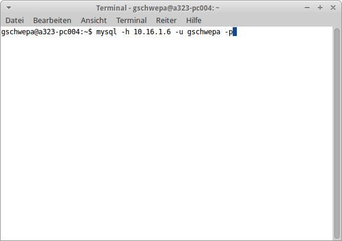
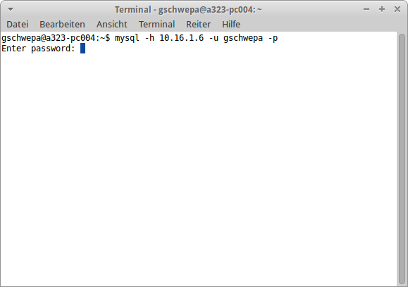
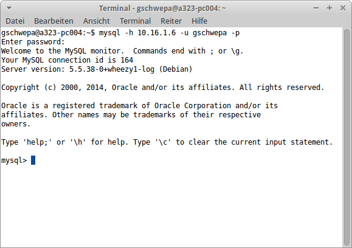

MySQL - Terminal
Schritt 1. Öffne das Terminal mit der Tastenkombination STRG + ALT + T.
Schritt 2. Gib nun folgenden Konsolen-Befehl ein -> mysql -h 10.16.1.6 -u USERNAME -p

Schritt 3. Bestätige nun den Konsolen-Befehl mit der Enter-Taste

Schritt 4. Gib nun dein Passwort von der Schule ein und bestätige wieder.

Schritt 5. Nun bist du am MySQL-Server eingeloggt und kannst MySQL Querys ausführen!